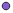

<!doctype html>
<html lang="en">
    <head>
        <meta charset="utf-8">
        <meta http-equiv="X-UA-Compatible" content="IE=edge">
        <meta name="viewport" content="initial-scale=1,user-scalable=no,maximum-scale=1,width=device-width">
        <meta name="mobile-web-app-capable" content="yes">
        <meta name="apple-mobile-web-app-capable" content="yes">
        <link rel="stylesheet" href="css/leaflet.css"><link rel="stylesheet" href="css/L.Control.Locate.min.css">
        <link rel="stylesheet" href="css/qgis2web.css"><link rel="stylesheet" href="css/fontawesome-all.min.css">
        <link rel="stylesheet" href="css/leaflet-measure.css">
        <style>
        html, body, #map {
            width: 100%;
            height: 100%;
            padding: 0;
            margin: 0;
        }
        </style>
        <title></title>
    </head>
    <body>
        <div id="map">
        </div>
        <script src="js/qgis2web_expressions.js"></script>
        <script src="js/leaflet.js"></script><script src="js/L.Control.Locate.min.js"></script>
        <script src="js/leaflet.rotatedMarker.js"></script>
        <script src="js/leaflet.pattern.js"></script>
        <script src="js/leaflet-hash.js"></script>
        <script src="js/Autolinker.min.js"></script>
        <script src="js/rbush.min.js"></script>
        <script src="js/labelgun.min.js"></script>
        <script src="js/labels.js"></script>
        <script src="js/leaflet-measure.js"></script>
        <script src="data/GunungpuntangTrack_3.js"></script>
        <script src="data/PointofInterest_4.js"></script>
        <script>
        var map = L.map('map', {
            zoomControl:true, maxZoom:24, minZoom:16
        }).fitBounds([[-7.116331610121324,107.6045169642085],[-7.1144284078985836,107.60740087534131]]);
        var hash = new L.Hash(map);
        map.attributionControl.setPrefix('<a href="https://github.com/tomchadwin/qgis2web" target="_blank">qgis2web</a> &middot; <a href="https://leafletjs.com" title="A JS library for interactive maps">Leaflet</a> &middot; <a href="https://qgis.org">QGIS</a>');
        var autolinker = new Autolinker({truncate: {length: 30, location: 'smart'}});
        L.control.locate({locateOptions: {maxZoom: 19}}).addTo(map);
        var measureControl = new L.Control.Measure({
            position: 'topleft',
            primaryLengthUnit: 'meters',
            secondaryLengthUnit: 'kilometers',
            primaryAreaUnit: 'sqmeters',
            secondaryAreaUnit: 'hectares'
        });
        measureControl.addTo(map);
        document.getElementsByClassName('leaflet-control-measure-toggle')[0]
        .innerHTML = '';
        document.getElementsByClassName('leaflet-control-measure-toggle')[0]
        .className += ' fas fa-ruler';
        var bounds_group = new L.featureGroup([]);
        function setBounds() {
        }
        map.createPane('pane_GoogleSatelliteHybrid_0');
        map.getPane('pane_GoogleSatelliteHybrid_0').style.zIndex = 400;
        var layer_GoogleSatelliteHybrid_0 = L.tileLayer('https://mt1.google.com/vt/lyrs=y&x={x}&y={y}&z={z}', {
            pane: 'pane_GoogleSatelliteHybrid_0',
            opacity: 1.0,
            attribution: '',
            minZoom: 16,
            maxZoom: 24,
            minNativeZoom: 0,
            maxNativeZoom: 18
        });
        layer_GoogleSatelliteHybrid_0;
        map.createPane('pane_GoogleSatellite_1');
        map.getPane('pane_GoogleSatellite_1').style.zIndex = 401;
        var layer_GoogleSatellite_1 = L.tileLayer('http://www.google.cn/maps/vt?lyrs=s@189&gl=cn&x={x}&y={y}&z={z}', {
            pane: 'pane_GoogleSatellite_1',
            opacity: 1.0,
            attribution: '',
            minZoom: 16,
            maxZoom: 24,
            minNativeZoom: 0,
            maxNativeZoom: 18
        });
        layer_GoogleSatellite_1;
        map.addLayer(layer_GoogleSatellite_1);
        map.createPane('pane_GoogleMaps_2');
        map.getPane('pane_GoogleMaps_2').style.zIndex = 402;
        var layer_GoogleMaps_2 = L.tileLayer('https://mt1.google.com/vt/lyrs=r&x={x}&y={y}&z={z}', {
            pane: 'pane_GoogleMaps_2',
            opacity: 1.0,
            attribution: '',
            minZoom: 16,
            maxZoom: 24,
            minNativeZoom: 0,
            maxNativeZoom: 19
        });
        layer_GoogleMaps_2;
        function pop_GunungpuntangTrack_3(feature, layer) {
            var popupContent = '<table>\
                    <tr>\
                        <td colspan="2">' + (feature.properties['name'] !== null ? autolinker.link(feature.properties['name'].toLocaleString()) : '') + '</td>\
                    </tr>\
                    <tr>\
                        <td colspan="2">' + (feature.properties['cmt'] !== null ? autolinker.link(feature.properties['cmt'].toLocaleString()) : '') + '</td>\
                    </tr>\
                    <tr>\
                        <td colspan="2">' + (feature.properties['desc'] !== null ? autolinker.link(feature.properties['desc'].toLocaleString()) : '') + '</td>\
                    </tr>\
                    <tr>\
                        <td colspan="2">' + (feature.properties['src'] !== null ? autolinker.link(feature.properties['src'].toLocaleString()) : '') + '</td>\
                    </tr>\
                    <tr>\
                        <td colspan="2">' + (feature.properties['link1_href'] !== null ? autolinker.link(feature.properties['link1_href'].toLocaleString()) : '') + '</td>\
                    </tr>\
                    <tr>\
                        <td colspan="2">' + (feature.properties['link1_text'] !== null ? autolinker.link(feature.properties['link1_text'].toLocaleString()) : '') + '</td>\
                    </tr>\
                    <tr>\
                        <td colspan="2">' + (feature.properties['link1_type'] !== null ? autolinker.link(feature.properties['link1_type'].toLocaleString()) : '') + '</td>\
                    </tr>\
                    <tr>\
                        <td colspan="2">' + (feature.properties['link2_href'] !== null ? autolinker.link(feature.properties['link2_href'].toLocaleString()) : '') + '</td>\
                    </tr>\
                    <tr>\
                        <td colspan="2">' + (feature.properties['link2_text'] !== null ? autolinker.link(feature.properties['link2_text'].toLocaleString()) : '') + '</td>\
                    </tr>\
                    <tr>\
                        <td colspan="2">' + (feature.properties['link2_type'] !== null ? autolinker.link(feature.properties['link2_type'].toLocaleString()) : '') + '</td>\
                    </tr>\
                    <tr>\
                        <td colspan="2">' + (feature.properties['number'] !== null ? autolinker.link(feature.properties['number'].toLocaleString()) : '') + '</td>\
                    </tr>\
                    <tr>\
                        <td colspan="2">' + (feature.properties['type'] !== null ? autolinker.link(feature.properties['type'].toLocaleString()) : '') + '</td>\
                    </tr>\
                </table>';
            layer.bindPopup(popupContent, {maxHeight: 400});
        }

        function style_GunungpuntangTrack_3_0() {
            return {
                pane: 'pane_GunungpuntangTrack_3',
                opacity: 1,
                color: 'rgba(219,30,42,1.0)',
                dashArray: '',
                lineCap: 'square',
                lineJoin: 'bevel',
                weight: 3.0,
                fillOpacity: 0,
                interactive: true,
            }
        }
        map.createPane('pane_GunungpuntangTrack_3');
        map.getPane('pane_GunungpuntangTrack_3').style.zIndex = 403;
        map.getPane('pane_GunungpuntangTrack_3').style['mix-blend-mode'] = 'normal';
        var layer_GunungpuntangTrack_3 = new L.geoJson(json_GunungpuntangTrack_3, {
            attribution: '',
            interactive: true,
            dataVar: 'json_GunungpuntangTrack_3',
            layerName: 'layer_GunungpuntangTrack_3',
            pane: 'pane_GunungpuntangTrack_3',
            onEachFeature: pop_GunungpuntangTrack_3,
            style: style_GunungpuntangTrack_3_0,
        });
        bounds_group.addLayer(layer_GunungpuntangTrack_3);
        map.addLayer(layer_GunungpuntangTrack_3);
        function pop_PointofInterest_4(feature, layer) {
            var popupContent = '<table>\
                    <tr>\
                        <td colspan="2">' + (feature.properties['No'] !== null ? autolinker.link(feature.properties['No'].toLocaleString()) : '') + '</td>\
                    </tr>\
                    <tr>\
                        <td colspan="2">' + (feature.properties['Destinatio'] !== null ? autolinker.link(feature.properties['Destinatio'].toLocaleString()) : '') + '</td>\
                    </tr>\
                    <tr>\
                        <td colspan="2">' + (feature.properties['Latitude'] !== null ? autolinker.link(feature.properties['Latitude'].toLocaleString()) : '') + '</td>\
                    </tr>\
                    <tr>\
                        <td colspan="2">' + (feature.properties['Longitude'] !== null ? autolinker.link(feature.properties['Longitude'].toLocaleString()) : '') + '</td>\
                    </tr>\
                    <tr>\
                        <td colspan="2">' + (feature.properties['Info'] !== null ? autolinker.link(feature.properties['Info'].toLocaleString()) : '') + '</td>\
                    </tr>\
                </table>';
            layer.bindPopup(popupContent, {maxHeight: 400});
        }

        function style_PointofInterest_4_0(feature) {
            switch(String(feature.properties['Info'])) {
                case 'Accomodation':
                    return {
                pane: 'pane_PointofInterest_4',
                radius: 4.0,
                opacity: 1,
                color: 'rgba(35,35,35,1.0)',
                dashArray: '',
                lineCap: 'butt',
                lineJoin: 'miter',
                weight: 1,
                fill: true,
                fillOpacity: 1,
                fillColor: 'rgba(201,161,41,1.0)',
                interactive: true,
            }
                    break;
                case 'Facilities':
                    return {
                pane: 'pane_PointofInterest_4',
                radius: 4.0,
                opacity: 1,
                color: 'rgba(35,35,35,1.0)',
                dashArray: '',
                lineCap: 'butt',
                lineJoin: 'miter',
                weight: 1,
                fill: true,
                fillOpacity: 1,
                fillColor: 'rgba(65,198,222,1.0)',
                interactive: true,
            }
                    break;
                case 'Point of Interest':
                    return {
                pane: 'pane_PointofInterest_4',
                radius: 4.0,
                opacity: 1,
                color: 'rgba(35,35,35,1.0)',
                dashArray: '',
                lineCap: 'butt',
                lineJoin: 'miter',
                weight: 1,
                fill: true,
                fillOpacity: 1,
                fillColor: 'rgba(133,93,209,1.0)',
                interactive: true,
            }
                    break;
                case 'Public Facilities':
                    return {
                pane: 'pane_PointofInterest_4',
                radius: 4.0,
                opacity: 1,
                color: 'rgba(35,35,35,1.0)',
                dashArray: '',
                lineCap: 'butt',
                lineJoin: 'miter',
                weight: 1,
                fill: true,
                fillOpacity: 1,
                fillColor: 'rgba(200,45,115,1.0)',
                interactive: true,
            }
                    break;
            }
        }
        map.createPane('pane_PointofInterest_4');
        map.getPane('pane_PointofInterest_4').style.zIndex = 404;
        map.getPane('pane_PointofInterest_4').style['mix-blend-mode'] = 'normal';
        var layer_PointofInterest_4 = new L.geoJson(json_PointofInterest_4, {
            attribution: '',
            interactive: true,
            dataVar: 'json_PointofInterest_4',
            layerName: 'layer_PointofInterest_4',
            pane: 'pane_PointofInterest_4',
            onEachFeature: pop_PointofInterest_4,
            pointToLayer: function (feature, latlng) {
                var context = {
                    feature: feature,
                    variables: {}
                };
                return L.circleMarker(latlng, style_PointofInterest_4_0(feature));
            },
        });
        bounds_group.addLayer(layer_PointofInterest_4);
        map.addLayer(layer_PointofInterest_4);
        var baseMaps = {};
        L.control.layers(baseMaps,{'Point of Interest<br /><table><tr><td style="text-align: center;"></td><td>Accomodation</td></tr><tr><td style="text-align: center;"></td><td>Facilities</td></tr><tr><td style="text-align: center;"></td><td>Point of Interest</td></tr><tr><td style="text-align: center;"></td><td>Public Facilities</td></tr></table>': layer_PointofInterest_4,' Gunungpuntang Track': layer_GunungpuntangTrack_3,"Google Maps": layer_GoogleMaps_2,"Google Satellite": layer_GoogleSatellite_1,"Google Satellite Hybrid": layer_GoogleSatelliteHybrid_0,}).addTo(map);
        setBounds();
        var i = 0;
        layer_PointofInterest_4.eachLayer(function(layer) {
            var context = {
                feature: layer.feature,
                variables: {}
            };
            layer.bindTooltip((layer.feature.properties['Destinatio'] !== null?String('<div style="color: #dadada; font-size: 10pt; font-family: \'Arial\', sans-serif;">' + layer.feature.properties['Destinatio']) + '</div>':''), {permanent: true, offset: [-0, -16], className: 'css_PointofInterest_4'});
            labels.push(layer);
            totalMarkers += 1;
              layer.added = true;
              addLabel(layer, i);
              i++;
        });
        resetLabels([layer_PointofInterest_4]);
        map.on("zoomend", function(){
            resetLabels([layer_PointofInterest_4]);
        });
        map.on("layeradd", function(){
            resetLabels([layer_PointofInterest_4]);
        });
        map.on("layerremove", function(){
            resetLabels([layer_PointofInterest_4]);
        });
        </script>
    </body>
</html>
